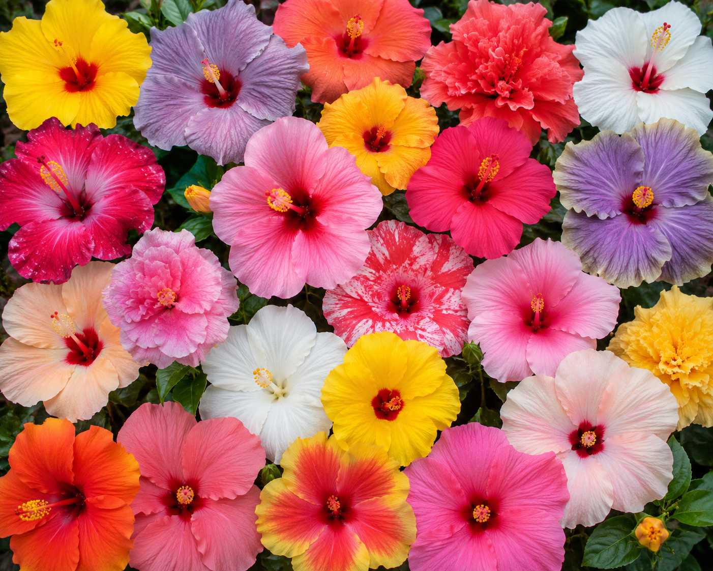
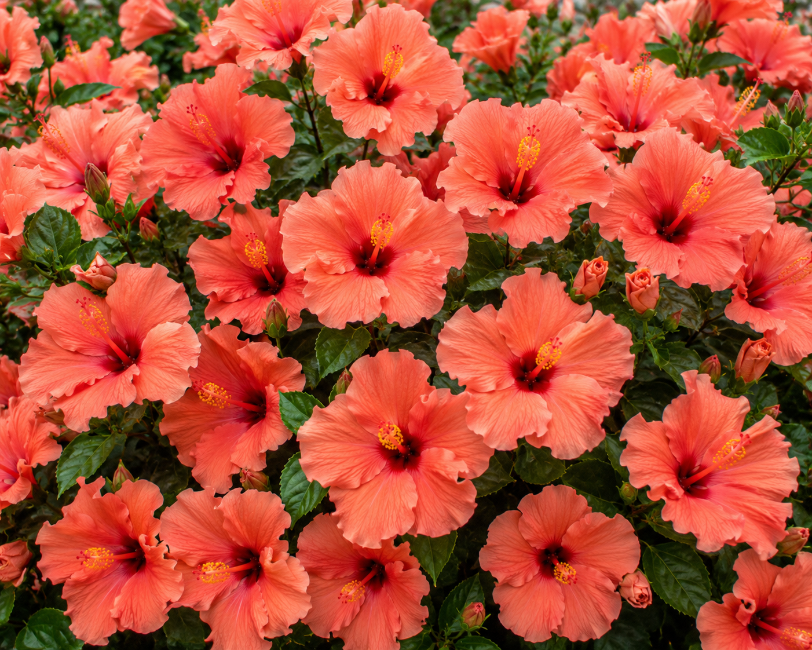

A topic that interests me is learning about many species of plants and how they interact with their environment. I love to research what kinds of plants grow in each climate and the factors that effect their growth cycles. For some this may seem like a boring interest, but it truely fascinates me.
My favorite flower is a hibiscus, especially the tropical variety. One fun fact about hibiscus is their blooms only last one day, but they are constantly producing new blooms. That being said, they would not be a good choice of flower to place in a bouquet.
Hover over the hibiscus image to see my favorite color variant.

Click the button below to reveal a fact about my favorite hibiscus variety.
